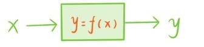
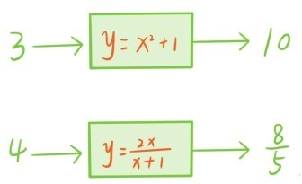
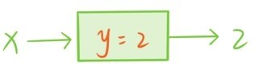
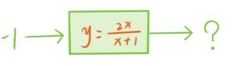

——数的加工机器
前面说过，所谓的代数语言就是让符号代替数，参与加减乘除运算。所以代替数的符号，比如x，表示一种变量，它可以替换成不同的数，关于x的多项式f(x)或分式都可以看成是与变量x相关联的另一个变量，随着x的变化而变化，一旦x确定了，f(x)的值也随之确定。
现实中，这类一个变量决定另一个变量的现象非常普遍。如果你固定以每分钟80米的速度行走，那么你行走的路程就是由行走的时间决定的，3分钟走80×3=240（米），5分钟走80×5=400（米），假设行走所花的时间为t分钟，那么行程L就是80t（米）。现在水池中有500升水，底部的小孔让水池每分钟流走6升水，那么t分钟之后，水池中只剩下V=500-6t升水。正方形的周长C和面积S也是完全由边长a确定的，边长为x厘米的正方形，周长是C=4x（厘米），面积是S=x2（平方厘米）。学过中学物理的读者可能会记得，自由落体运动的物体，在t秒时刻下落的距离s为4.9t2。
由这些现象就可以抽象出函数的概念。函数是指两个变量x与y的对应关系，其中变量x称为自变量，可以表示不同的数，另一个变量y称为x的函数，由x决定。上面5个例子中抽象得来的函数分别是
L=80t
V=500-6t
C=4x
S=x2
s=4.9t2
这个函数的自变量是t或x。
可以把每个函数看成是一台转化数的机器，这个机器有个输入口，输入一个数x，它会按照一定的转化规则把x自动转化成另一个数y=f(x)输出，这里f(x)表示转化规则。

例如，任何一个多项式f(x)或分式都可以看成一台转化机器。

这样的函数分别称为多项式函数和分式函数。常值多项式对应的函数称为常值函数，比如y=2。这种函数机器非常呆板，不管你输入什么数，它永远输出2。

最后，需要留意的是，往某些函数机器中输入数时，可能会发生“死机”现象，比如下面这个分式函数，

如果输入的数是x=-1，那么表达式分母变成0了，所以这时机器就“死机”了，无法再输出数了。但是多项式函数永远不会死机，不论输入什么数，多项式的表达式都可以正常输出一个数。